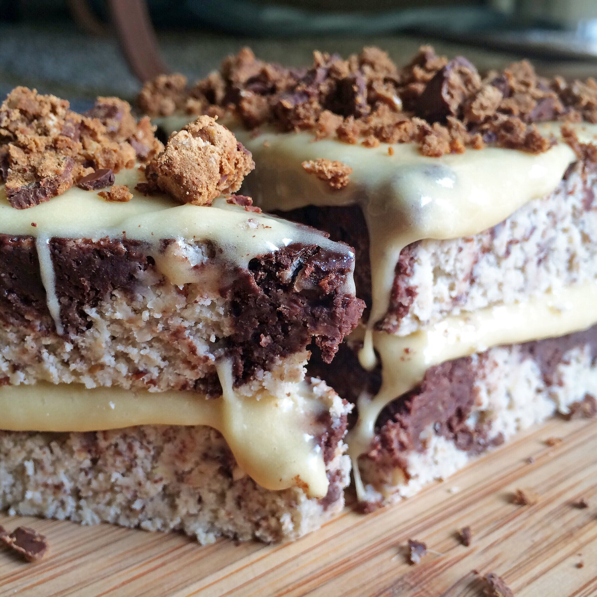
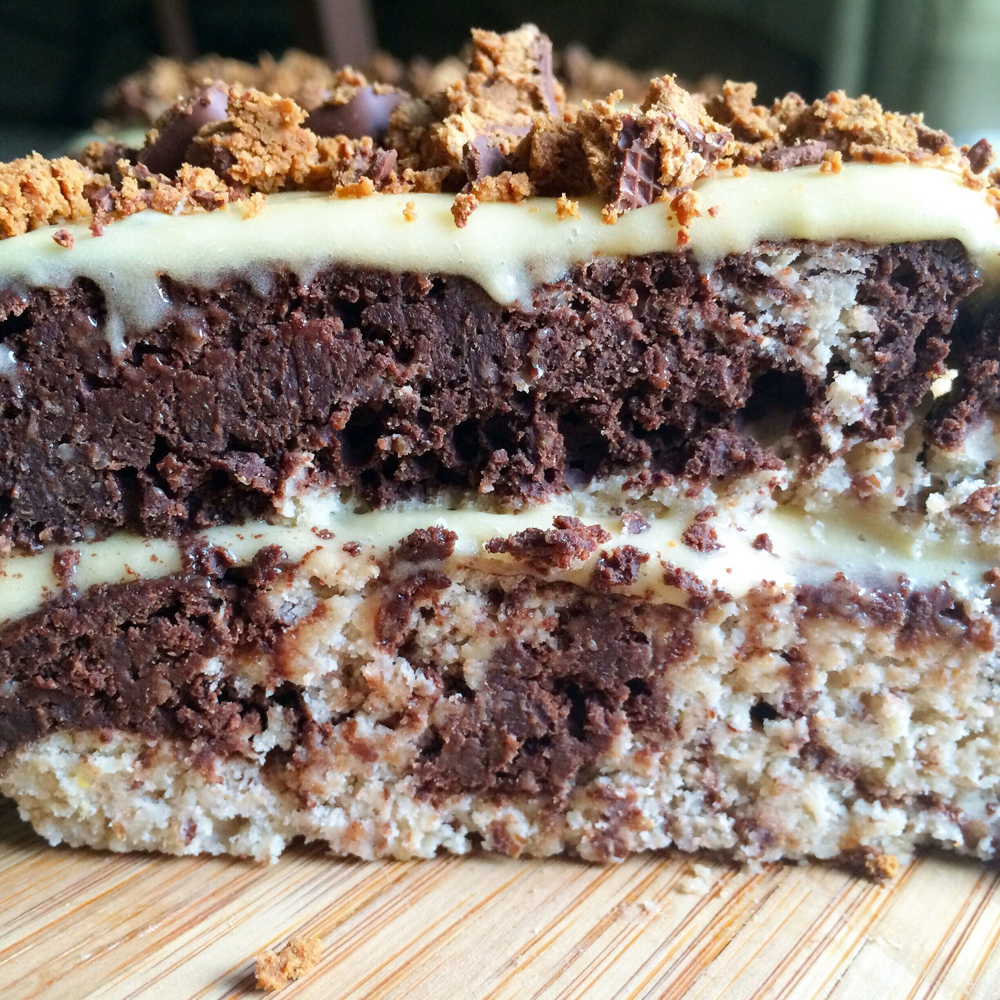
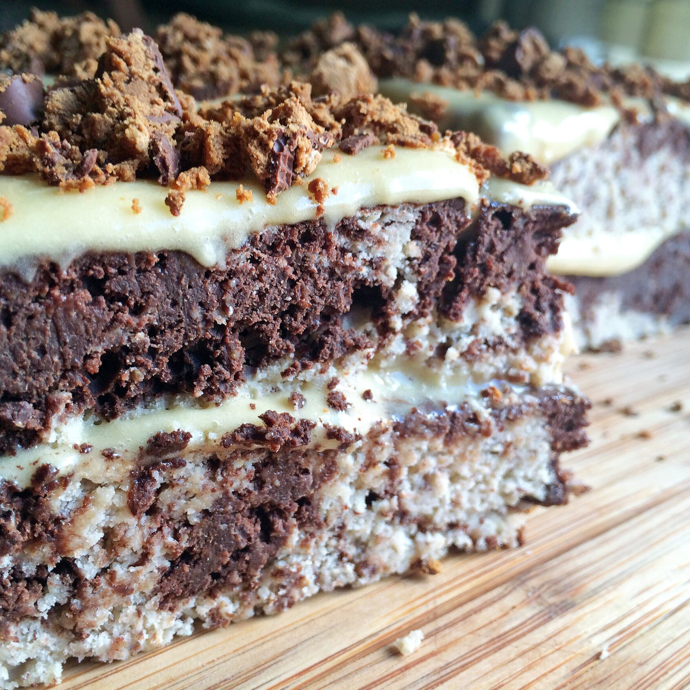

Marble Cake (vegan, gluten free)


Hey guys! This was such a fun recipe to create! I recently came across Gretchen's Bakery - she's been baking over 20 years and shares crazy awesome dessert recipes like these Mint Chocolate Chip Brownie Cookies. My problem issss... they're the traditional style desserts (sugar, dairy, eggs, etc)! It got me thinking - I can healthify some of this!! After speaking with her, she mentioned that some of her readers were really interested in egg-free recipes. I'm like - me me me I can do that for you!! I never realized how many people have egg allergies or can't have eggs until my recent venture into vegan eating!
Soo I went through one of her ebooks (The Bakery Days) and found a gorgeous Marble Bundt Cake to healthify. It's easy when you have a base recipe to make healthy substitutions! I am sooo satisfied with how it turned out!!!! When I taste-tested it, I immediately went back for a second slice O_O even though I told myself just one. That happens more than I want to admit shhhh.
This cake is light & sweet in the vanilla sections, yet soo dense & fudgey in the chocolate portion. I love that it's a swirl of the two flavors. Gives you the best of both worlds. :) Make this and let me know which flavor is your favorite!! I reeeally can't decide.
Marble Cake (vegan, gluten free)
Serves: 8
-
1 cup buckwheat flour
-
1 cup oat flour
-
2 tsp baking powder
-
1/2 tsp salt
-
1 cup baking stevia
-
1/2 cup unsweetened applesauce
-
1/4 cup melted coconut oil
-
4 flax eggs (1/4 cup ground flax seeds + 3/4 cup warm water)
-
2 tsp vanilla extract
-
1/2 cup unsweetened cocoa powder
-
1/2 cup water
-
1/2 cup baking stevia
Preheat the oven to 350 F. In a medium bowl, mix all of your dry ingredients (buckwheat flour, oat flour, baking powder, salt, stevia). Once even, mix in the wet ingredients (applesauce, coconut oil, flax eggs, and vanilla). Stir well. Remove approximately half of the batter to another mixing bowl.
In a small bowl combine the cocoa powder, water, and stevia, and whisk until smooth. Add the cocoa paste to one half of the vanilla batter and mix to a smooth chocolate batter.
Pour the vanilla batter into a cake pan sprayed with nonstick spray. Then add the chocolate batter in large spoons full all around the top of the vanilla batter. Swirl the two batters together with a small knife in a random pattern. Bake at 350°F for 20 minutes. Remove from the oven, let cool 10 minutes, cut into 8 slices, and enjoy!
Serve as is or - I iced mine with a vanilla protein icing (1/4 cup dairy free cream cheese, 1 scoop plant-based Nuzest protein, stevia, and water) and chopped up Square Bars!
Nutritional info for one serving (before icing): 180 calories; 10g fat, 23 g carbs (6 g fiber), and 4 g protein
